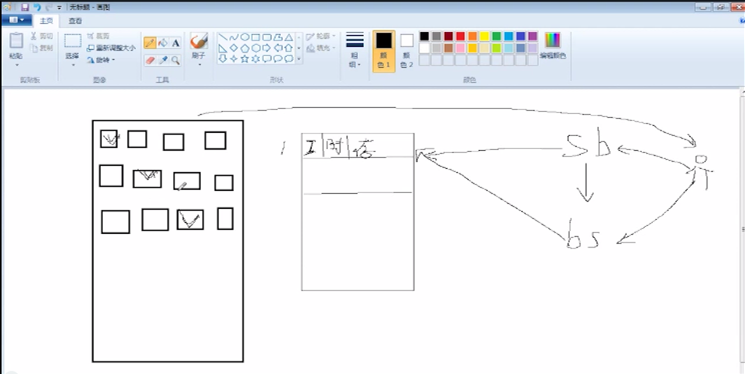

（程序猿养成计划）Linux手记（I）
跳了好多内容呢，所以手记内容并不全，真是一段艰辛的历程，然而还没有结束。
课程来源：http://www.imooc.com/learn/175
Linux基本操作
查询目录中内容: ls
ls [选项] [文件或目录]
选项：
-a 显示所有文件，包括隐藏文件
-l 显示详细信息
-d 查看目录属性
-h 人性化显示文件大小
-i 显示inode
举例：ls -lh
建立目录(make directories)：mkdir
mkdir -p [目录名]
-p 递归创建
切换所在目录(change directory)：cd
简化操作
cd 进入当前用户的家目录
cd ~ 进入当前用户的家目录
cd - 进入上次所在目录
cd .. 进入上一级目录
cd cd. 进入当前目录
查询所在目录位置(print working directory)：pwd
pwd
删除空目录(remove empty directors): rmdir
rmdir[目录名]
复制命令(copy)：cp
cp [选项] [原文件或目录] [目标目录]
-r 复制目录
-p 连带文件属性复制
-d 若原文件是链接文件，则复制链接属性
-a 相当于 -pdr
剪切或改名命令(move): mv
mv [原文件或目录] [目标目录]
删除目录或文件(remove)：rm
rm -rf [文件或目录]
-r 删除目录
-f 强制
链接命令(link): ln
ln -s [原文件] [目标文件]
-s 创建软链接
#文件搜索命令locate
#命令搜索命令whereis与which
#文件搜索命令find
#字符串搜索命令grep
locate命令格式
locate 文件名 #在后台数据库中按文件名搜索，搜索速度更快
/var/lib/mlocate #locate命令所搜索的后台数据库
updatedb #更新数据库
搜索命令的命令whereis
whereis 命令名
-b 只查找可执行文件
-m 只查找帮助文件
find命令
find [搜索范围] [搜索命令]
#find / -name install.log #按文件名查找
#find /root -iname install.log #不区分大小写
#find /root -user root #按照所有者搜索
#find /root -nouser #查找没有所有者的文件
#find /var/log/ -mtime +10 #查找10天前修改的文件
-10 10天内修改的文件
10 10天当天修改的文件
+10 10天前修改的文件
atime 文件访问时间
ctime 改变文件属性
mtime 修改文件内容
#find /etc -size +20k -a -size -50k #查找/etc/目录下，大于20KB并且小于50KB的文件
-a and 逻辑与
-o or 逻辑或
#find /etc -size +20k -a -size -50k -exec ls -lh {} \; #查找/etc/目录下，大于20KB并且小于50KB的文件，并且显示详细信息
#-exec/ok 命令 {} \; 对搜索结果执行操作
搜搜字符串命令grep
grep [选项] 字符集 文件名
-i 忽略大小写
-v 排除指定字符集
帮助命令man
man 命令 #获取指定命令的帮助
man ls #查看ls的帮助
man -f 命令 #相当于 whatis 命令
举例：man -5 password
按q键退出man命令
选项帮助 --help
举例：ls --help
shell内部命令帮助
help shell内部命令
举例：whereis cd #确定是否是shell内部命令
举例：help cd #获取内部命令帮助
详细命令帮助info
info 命令
-回车：进入子帮助页面（带有*号标记）
-u: 进入上层页面
-n: 进入下一个帮助小节
-p: 进入上一个帮助小节
-q: 退出
.zip格式压缩
zip 压缩文件名 原文件 #压缩文件
zip -r 压缩文件名 源目录 #压缩目录
.zip格式解压缩
unzip 压缩文件 #解压缩文件
.gz格式压缩
gzip 源文件 #压缩为.gz格式的压缩文件，源文件会消失
gzip -c 源文件 > 压缩文件 #压缩为.gz格式，源文件保留
例如：gzip -c cangls > cangls.gz
gzip -r 目录 #压缩目录下所有的子文件，但是不能压缩目录
gzip -d 压缩文件 #解压缩文件
gunzip 压缩文件 #解压缩文件
.bz2格式压缩
bzip2 源文件 #压缩文件.bz2格式，不保留源文件
bzip2 -k 源文件 #压缩之后保留源文件
注意：bzip2命令不能压缩目录
打包命令tar
tar -cvf 打包文件名 源文件
-c 打包
-v 显示过程
-f 指定打包后的文件名
例如 tar -cvf longzls.tar longzls
.tar.gz压缩格式
tar -zcvf 压缩包名.tar.gz 源文件
-z 压缩为.tar.gz格式
tar -zxvf 压缩包名.tar.gz
-x 解压缩.tar.gz格式
.tar .bz2压缩格式
tar -jcvf 压缩包名.tar.bz2 源文件
-z 压缩为.tar.bz2格式
tar -jxvf 压缩包名.tar.bz2
-x 解压缩.tar.bz2格式
关机 shutdown命令
[[email protected] ~]# shutdown [选项]时间
-c 取消前一个关机命令
-h 关机
-r 重启
其他关机命令
[[email protected] ~]# halt
[[email protected] ~]# poweroff
[[email protected] ~]# init 0
其他重启命令
[[email protected] ~]# reboot
[[email protected] ~]# init 6
系统运行级别
0 关机
1 单用户
2 不完全多用户，不含NFS服务
3 完全多用户
4 未分配
5 图形界面
6 重启
[[email protected] ~]# cat/etc/inittab
#修改系统默认运行级别
id:3:initdafault:
[[email protected] ~]# runlevel
#查询系统运行级别
退出登录命令
[[email protected] ~]# logout
1.查询与自动挂载
[[email protected] ~]# mount
#查询系统中已经挂载的设备
[[email protected] ~]# mount -a
#依据配置文件/etc/fstab的内容，自动挂载
2.挂载命令格式
[[email protected] ~]# mount [-t 文件系统] [-o 特殊选项] 设备 文件名 挂载点
-t 文件系统：指定挂载类型，可以ext3、ext4、iso9660等
-o 特殊选项：可以指定挂载的额外选项
3.挂载光盘
[[email protected] ~]# mkdir /mnt/cdrom
#建立挂载点
[[email protected] ~]# mount -t iso9660 /dev/cdrom/mnt/cdrom
#挂载光盘
[[email protected] ~]# mont /dev/sr0/mnt/cdrom
4.卸载命令
[[email protected] ~]# umount 设备文件名或挂载点
[[email protected] ~]# umount /mnt/cdrom
5.挂载U盘
[[email protected] ~]# fdisk -l
#查看U盘设备文件名
[[email protected] ~]# mount -t vfat /dev/sdb1/mnt/usb/
注意：Linux默认不支持NTFS文件系统
查看登录用户信息
w 用户名
命令输出：登录的用户名
USER: 登录终端
TTY: 从哪个IP地址登录
FROM: 登录时间
[email protected]: 用户闲置时间
IDLE: 用户限制时间
JCPU: 连接所有进程占用时间
PCPU: 当前进程占用时间
WHAT: 当前正在运行的命令
Linux中的通配符
* 匹配任意内容
? 匹配任意一个字符
[] 匹配任意一个中括号内的字符
文件类型显示
第一位：-文件 d目录 l软链接
后三位：u所有者
后三位：g所属组
后三位：o其他人
共十位：r读 w写 x执行
常用目录作用
/ 根目录
/bin 命令保存目录（普通用户就可以读取的命令）
/boot 启动目录，启动相关文件
/dev设备文件保存目录
/etc 配置文件保存目录
/home 普通用户的家目录
/lib 系统库保存目录
/mnt 系统挂载目录
/media 挂载目录
Shall基础
1.echo输出命令
echo [选项] [输出命令]
-e 支持反斜杠控制的字符转换
[[email protected] ~]# echo -e "hell\bo"
#删除左侧字符
[[email protected] ~]# echo -e "h\te\tl\nl\to"
#制表符与换行符
[[email protected] ~]# echo -e \ "x68\t\x65\t\x6c\n\x6c\t\x6f\t"
#按照十六进制ASCII码也同样可以输出
[[email protected] ~]# echo -e "\e[1;31m 嫁人就要嫁凤姐 \e[0m"
#输出颜色
2.第一个脚本
[[email protected] sh]# vi hello.sh
#!/bin/bash
#The first program
echo -e "\e[1;34m 天上掉下个林妹妹！ \e[0m"
3.脚本执行
赋予执行权限，直接运行
chmod 755 hello.sh
./hello.sh
通过Bash调用执行脚本
bash hello.sh
1.查看与设定别名
alias #查看系统中所有的命令别名
alias 别名='原命令' #设定命令别名
别名永久生效与删除别名
vi ~/.bashrec #写入环境变量配置文件
unalias 别名 #删除别名
命令生效顺序
...
常用快捷键
ctrl + c 强制终止当前命令
ctrl + l 清屏
ctrl + a 光标移动到命令行首
ctrl + e 光标移动到命令行尾
ctrl + u 从光标所在位置删除到行首
ctrl + z 把命令放入后台
ctrl + r 在历史命令中搜索
2.历史命令
history [历史命令] [历史命令保存文件]
-c: 清空历史命令
-w: 把缓存中的命令写入历史命令保存文件~/.bash_history
历史命令默认保存1000条，可以在环境变量配置文件/etc/profile中进行修改
历史命令的调用
使用上下箭头调用以前的历史命令
使用"!n"重复执行第n条命令
使用"!!"重复执行上一条命令
使用"!字串"重复执行最后一条以该字串开头的命令
命令与文件补全
在Bash中，Tab自动补全
...
输入命令后 + 两次Tab 路径补全、命令补全
...
ll == ls -l
1.标准输入输出
设备 设备文件名 文件描述符 类型
键盘 /dev/stdin 0 标准输入
显示器 /dev/sdtout 1 标准输入
显示器 /dev/sdterr 2 标准错误输出
2.输出重定向
...
3.输入重定向
[[email protected] ~]# wc [选项] [文件名]
-c 统计字节数
-w 统计单词书
-l 统计行数
1.度命令顺序执行
...
2.管道符
[[email protected] ~]# 命令1 | 命令2
#命令1的正确输出作为命令2的操作对象
1.通配符
...
2.bash中其他特殊符号
虽然用了引用格式，但内容并不是真的引用，只是为了排版舒服一点。
课程的主讲老师是@Tony老师，Tony老师不仅是一位Linux大神，还是一个灵魂画手哦！上图：

最后由衷感谢这位坏坏的老师！
PS:参考手册：Linux常用命令大全.chm